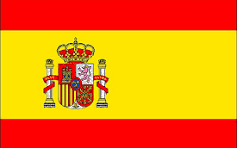
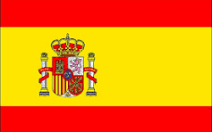
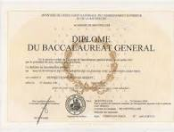
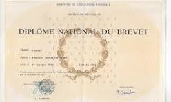
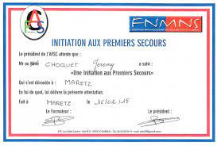

Français

Langue maternelle
Anglais

Niveau A2+
Espagnol
Niveau A2
Je m'appelle Etienne Zorrilla
Je suis un étudiant en Bachelor Universitaire de Technologie à l'académie de Poitiers au département de Châtellerault (86) en réseau et télécommunication.
J'ai un BAC général avec les options SES, mathématique, physique-chimie et mathématique experte.
J'ai choisi cette formation car c'est un domaine qui m'intéresse particulièrement car je veux allier ma passion pour l'informatique tout en développant l'aspect réseau.
Français
Langue maternelle
Anglais
Niveau A2+
Espagnol
Niveau A2
La curiosité est l'une des qualités qui me représente le plus. Je suis toujours à la recherche d'informations complémentaires afin de mieux comprendre les sujets qui me passionnent.
La rigueur est également une force chez moi. J'aime être précis et je recherche à ce que mon travail soit toujours de bonne qualité.
La flexibilité et l'adaptabilité sont quelque chose que je trouve importantes chez moi. J'essaie, en écoutant les remarques, d'adapter les situations au vue de mes collègues sur un point de vue émotionnel ou physique tout en gardant une efficacité constante dans le travail effectué.
Je suis passionné par beaucoup de choses, dont l'informatique comme l'intitulé de la formation laisse penser et également les jeux vidéo, mais également de tout ce qui touche à la nourriture.
Je suis également toujours intéressé à apprendre de nouvelles choses tous les jours et à passer du temps avec mes amis.
J'aime également tout ce qui touche la culture japonaise dont les mangas et les arts martiaux.
J'ai obtenu le BAC général lors de l'année scolaire 2021-2023
J'ai obtenu le brevet lors de l'année 2019-2020
Initiation aux Gestes de Premiers Secours
